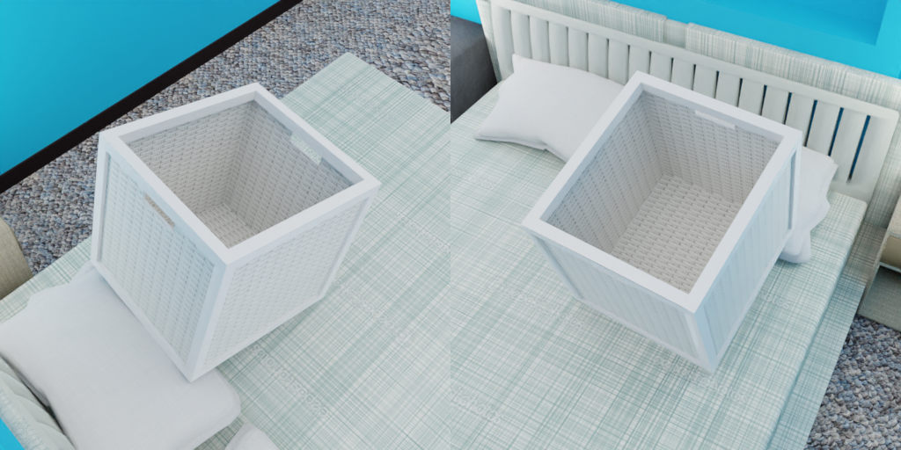

ShapeNet with Scenenet¶

The focus of this example is the loader.ShapeNetLoader in combination with the SceneNet loader, this is an advanced example, please make sure that you have read:
Usage¶
Execute in the BlenderProc main directory:
python run.py examples/shapenet_with_scenenet/config.yaml <PATH_TO_SCENE_NET_OBJ_FILE> <PATH_TO_TEXTURE_FOLDER> <PATH_TO_ShapeNetCore.v2> examples/shapenet_with_scenenet/output
examples/shapenet_with_scenenet/config.yaml: path to the configuration file with pipeline configuration.<PATH_TO_SCENE_NET_OBJ_FILE>: path to the used SceneNet.objfile, download via this script- <PATH_TO_TEXTURE_FOLDER>: path to the downloaded texture files, you can find them [here](http://tinyurl.com/zpc9ppb)
- <PATH_TO_ShapeNetCore.v2>: path to the downloaded shape net core v2 dataset, get it [here](http://www.shapenet.org/)
examples/shapenet_with_scenenet/output: path to the output directory.
As this example requires a bed to be present in the scene, it will only work with the 1Bedroom/* SceneNet scenes.
Visualization¶
In the output folder you will find a series of .hdf5 containers. These can be visualized with the script:
python scripts/visHdf5Files.py examples/shapenet_with_scenenet/output/*.hdf5
Steps¶
- At first the SceneNet scene is loaded and we add the custom property
cp_physicsto make sure that the sampled ShapeNet objects, bounds of the SceneNet scene. - As explained in the scenenet example, the textures are randomly sampled.
- The ShapeNetLoader loads all the object paths with the
synset_id=02801938, this id stands for the categorybasket. - One of them is now randomly selected and loaded.
- Then we select that one object and change its location to be above an object with the
catgory_id = 4, which stands for bed. - We also add a solidify modifier as a few of the objects in the ShapeNet dataset have only a really thin outer shell, this might lead to bad results in the physics simulation.
- The physics simulation is run to let the ShapeNet object fall down on the bed.
- We finally sample some cameras around this ShapeNet object, which are located in a HalfSphere above the ShapeNet object.
- Now we only have to render it and store the results it in a
.hdf5container
Config file¶
SceneNetLoader¶
{
"module": "loader.SceneNetLoader",
"config": {
# after downloading the scenenet dataset it should be located inside of resources/scenenet/SceneNetData/
"file_path": "<args:0>",
"texture_folder": "<args:1>",
"add_properties": {
"cp_physics": False
}
}
}
This loader automatically loads a SceneNet scene/house given the corresponding .obj file.
The textures are randomly sampled from the texture folder, for more information see the scenenet example.
The SceneNetLoader also sets the category_id of each object, such that semantic segmentation maps can be rendered in a following step.
To each loaded object do we add the custom property cp_physics: False, which means that all of the objects behave passively in a physics simulation.
ShapeNetLoader¶
{
"module": "loader.ShapeNetLoader",
"config": {
"data_path": "<args:0>",
"used_synset_id": "02801938",
"add_properties": {
"cp_shape_net_object": True,
# set the custom property physics to True
"cp_physics": True
}
}
}
This module loads a ShapeNet Object, it only needs the path to the ShapeNetCore.v2 folder, which is saved in data_path.
The synset_id = 02801938 is set to the id of a basket, which means a random basket will be loaded.
The position will be in the center of the scene, and we add the custom property cp_physics: True so that the object will fall during the physics simulation.
We also add a custom property to make the selection with EntityManipulator in the next step easier and set the property that the object will be simulated during the physics simulation.
EntityManipulator¶
{
"module": "manipulators.EntityManipulator",
"config": {
# get all shape net objects, as we have only loaded one, this returns only one entity
"selector": {
"provider": "getter.Entity",
"conditions": {
"cp_shape_net_object": True,
"type": "MESH"
}
},
# Sets the location of this entity above a bed
"location": {
"provider": "sampler.UpperRegionSampler",
"min_height": 0.3,
"to_sample_on": {
"provider": "getter.Entity",
"conditions": {
"cp_category_id": 4, # 4 is the category of the bed
"type": "MESH"
}
}
},
# by adding a modifier we avoid that the objects falls through other objects during the physics simulation
"cf_add_modifier": {
"name": "Solidify",
"thickness": 0.0025
}
}
}
With the EntityManipulator do we change the location and the custom properties of the ShapeNet Object.
For that we first select the object, via the "selector", based on these conditions it returns the ShapeNetObject, which we will manipulate next.
We first set the location to be sampled above an entity, which has the category_id: 4 (4 stands for bed).
Finally, we add a solidify modifier to get a correct physics interaction.
PhysicsPositioning¶
{
"module": "object.PhysicsPositioning",
"config": {
"solver_iters": 30,
"substeps_per_frame": 40,
"min_simulation_time": 0.5,
"max_simulation_time": 4,
"check_object_interval": 0.25,
"mass_scaling": True,
"mass_factor": 2000,
"collision_margin": 0.00001,
"collision_shape": "MESH"
}
}
We then run the physics simulation, for more information about that please see the example/physiscs_positioning.
The high mass factor and the small collision margin guarantee that the object does not move too much.
Important here are the amount of solver_iters and substeps_per_frame as they have to be high, as lot of objects in the ShapeNet dataset consist out of thin small pieces.
Without this they might slide into the SceneNet objects.
CameraSampler¶
{
"module": "camera.CameraSampler",
"config": {
"cam_poses": [
{
"number_of_samples": 5,
"location": {
"provider":"sampler.PartSphere",
"center": {
"provider": "getter.POI",
"selector": {
"provider": "getter.Entity",
"conditions": {
"cp_shape_net_object": True,
"type": "MESH"
}
}
},
"distance_above_center": 0.5,
"radius": 2,
"mode": "SURFACE"
},
"rotation": {
"format": "look_at",
"value": {
"provider": "getter.POI",
"selector": {
"provider": "getter.Entity",
"conditions": {
"cp_shape_net_object": True,
"type": "MESH"
}
}
}
}
}
]
}
}
We sample here five random camera poses, where the location is on a PartSphere with a radius of 2 around the ShapeNet object.
Only points, which are 0.5 above the center are considered.
These objects are selected via a getter.Entity provider, which feeds into a getter.POI, which returns the bounding box center of the selected object.
Each cameras’ rotation is such that it looks directly at the object, and the camera faces upwards in Z direction, we use the same selection for the center of the object as for the location.
We render again and store the result inside of .hdf5 container.